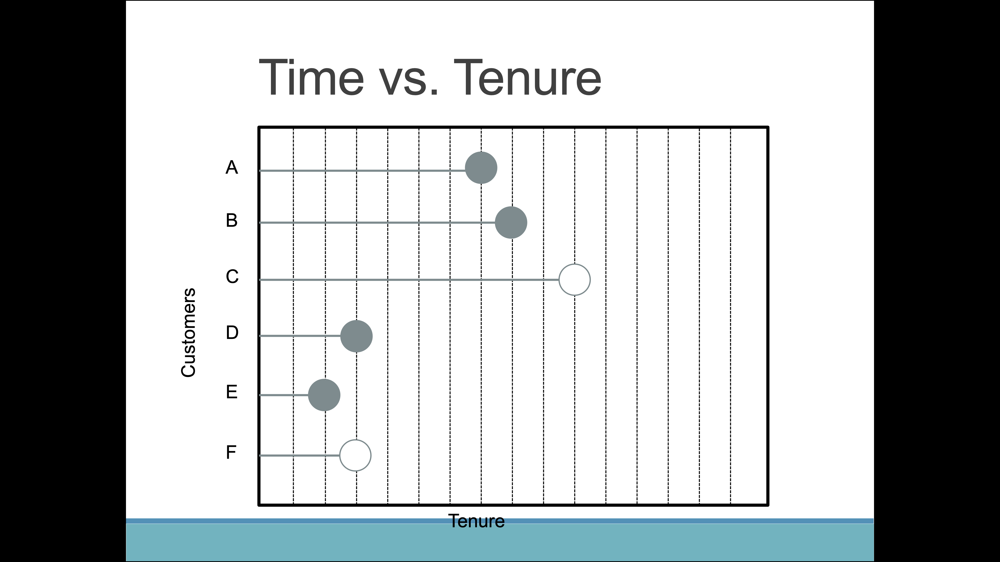
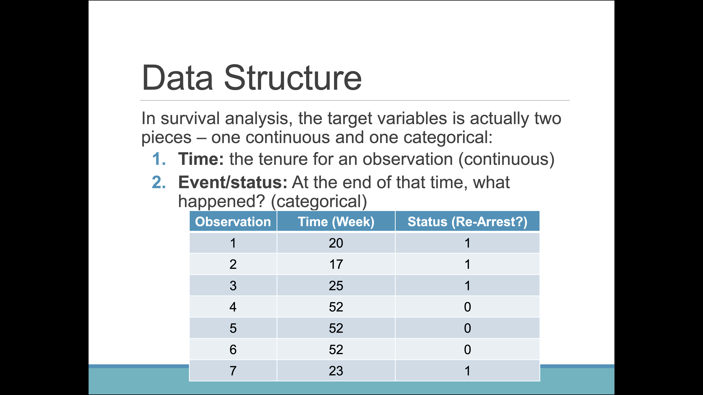
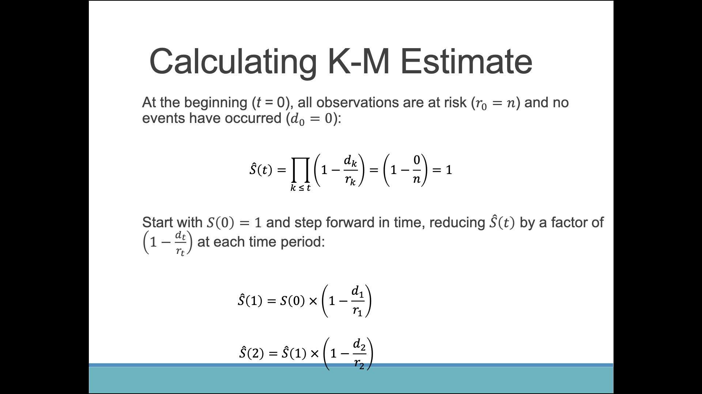
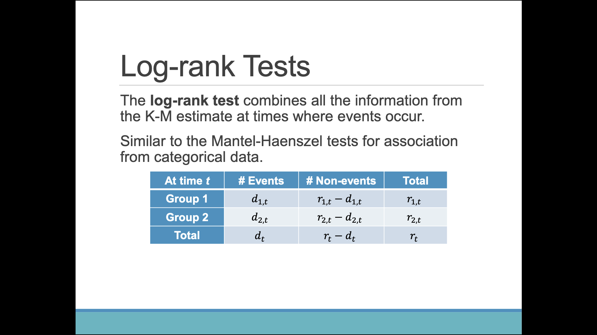
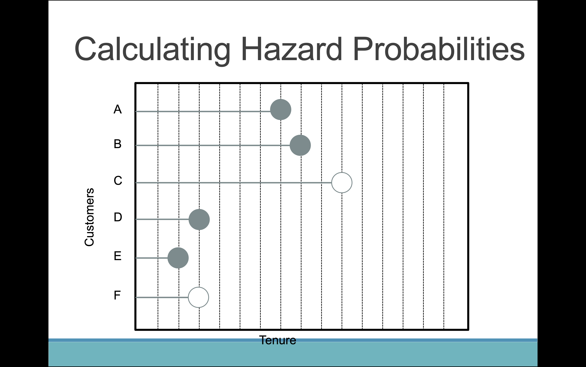
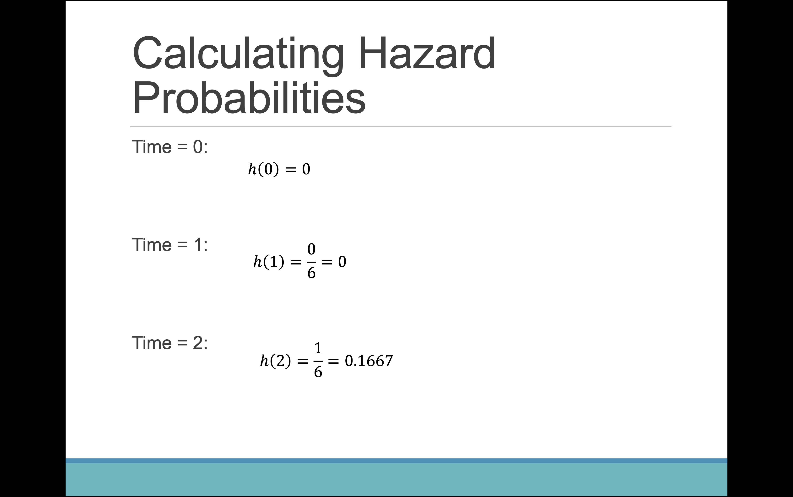

The following object is masked from 'package:survival':
myeloma
Code
use_condaenv("msa")
Code
import pandas as pdimport numpy as npimport matplotlib.pyplot as pltfrom sksurv.nonparametric import kaplan_meier_estimatorfrom lifelines import KaplanMeierFitterfrom lifelines import NelsonAalenFitter
1 What is Survival Analysis?
Survival analysis is a branch of statistics that deals with the analysis of time-to-event data. The event can be anything that occurs at a specific point in time, such as death, injury, or failure.
Time generally refers to tenure rather than actual calendar time. The event is some specific outcome of interest:
Customer cancel service
Customer makes another purchase
Patient develops disease
Compare this to logistic regression, where we are studying if the event happened or not. Survival analysis is studying how long it took for the event to happen.
1.1 Numeric Target
We can’t use OLS for time-to-event data due to censoring. For some observations, the event may never occur or has not happened yet. Tenure is also always positive and the risk of failure can change over time–not a linear relationship.
1.2 Data Structure
Survival analysis splits the target variable into two pieces: a continuous and a categorical variable.
Time: Tenure for an observation
Event: At the end of that time, what happened?
Using the Maryland Recidivism Data, we want to model the association between various factors and length of time before re-arrest.
Week: Week of arrest - week which equals 52 is not arrested
Arrest: Indicator for arrest (1 = yes, 0 = no)
Predictors:
fin: Received financial aid upon release (1 = yes, 0 = no)
age: Age at time of release (years)
race: Indicator for African American (1 = yes, 0 = no)
wexp: Indicator of prior work experience prior to incarceration (1 = yes, 0 = no)
mar: Married at time of release (1 = yes, 0 = no)
paro: Released on parole (1 = yes, 0 = no)
prio: Number of prior convictions
2 Time and Censoring
Survival analysis depends on a few assumptions:
Every observation starts at the same time since we are not interested in time, but tenure
We are interested in time to event \(T\), but we can not observe this for all observations–they are censored
We take the minimum between \(T_i\) and the censoring time \(C_i\)

Figure 1: Time vs. Tenure

Figure 2: Data Structure
Censored data is NOT missing data. We do not know the actual time to event \(T_i\) for censored observations. We only know that for some amount of time the event has not occurred. Data is incomplete, but not missing.
2.1 Types of Censoring
Type I censoring is where there is an end time \(c\) and any subject that hasn’t had the event by time c is censored.
Type II censoring is where time goes until a certain number of events have occurred and any subjects who haven’t had the event by that time are censored.
2.1.1 Right, Left, and Interval Censoring
Observation is right censored when \(T > c\). An example is when a clinical trial ends and patient is still alive. Censoring is noninformative–patients who are censored should have the same future risk for the event happening, conditional on exposure, as those who continue to be followed.
Observation is left censored when \(T < c\). An example is whne a customer enrolled more than 3 years ago. A new customer tracking system was implemented, but current customers were around before.
Interval censoring is where \(a < T < b\). An example is when a person tests negative during appointment at \(a\), but positive during appointment at \(b\). So time developing disease occurs between \(a\) and \(b\).
3 Survival Function
Survival analysis is described in two major quantities: survival function and hazard function.
Survival function: Probability of surviving beyond time \(t\).
\[
S(t) = P(T > t)
\]
Always starts at 1
Never increases
Bounded below by 0
3.1 Kaplan-Meier Estimator
The Kaplan-Meier estimator is a non-parametric estimator of the survival function. It is a product of the survival probabilities at each time point. We want to estimate the proportion of individuals “still alive” at any given time \(t\).
\(d_k\) is the number of events occurring at time \(t\)
\(r_k\) is the number of observations available right before time \(t\) (risk set)
Note that censored individuals are initially included in the risk set up until the point of censoring.

Figure 3: Calculating K-M Estimate
3.2 Summary Statistics
Due to censoring, mean is difficult to estimate but the median is still valid as long as the event occurs for at least half of the sample.
The median is the half-life or the time \(t\) that \(\hat{S}(t)\) drops below 0.5. The half-life interpretation is that 50% of observations survive beyond time \(t\).
Rows: 432 Columns: 63
── Column specification ────────────────────────────────────────────────────────
Delimiter: ","
dbl (63): week, arrest, fin, age, race, wexp, mar, paro, prio, educ, emp1, e...
ℹ Use `spec()` to retrieve the full column specification for this data.
ℹ Specify the column types or set `show_col_types = FALSE` to quiet this message.
We can also create separate / stratified curves by group. Different curves result in different estimates for each group.
R provides 2 tests that each have the same null hypothesis–all survival curves are equal and alternative is that at least one curve is different.
Log-rank Test
Wilcoxon Test
4.1 Log-rank test
Combines all the information from the K-M estimate at times where events occur.
For each group, calculate expected events and compare to observed events. This is a \(\chi^2\) statistic with \(k - 1\) degrees of freedom.

Figure 4: Log-rank Tests
4.2 Wilcoxon Test
Similar to Log-rank test except that we now use weights. This test places larger emphasis on earlier event times.
5 Hazard Function
The hazard function is the instantaneous rate of failure at time \(t\) given that the individual has survived up to time \(t\).
We have two common types of hazard functions: harzard probabilities and hazard rates.
5.1 Hazard Probabilities
\[
h(t) = P(t < T < t + 1 | T > t)
\]
In general, hazard probability can be interpreted as “assuming the event has not occurred yet, this is the probability the events occurs by the next time point.”
An example is that a customer has survived for a certain length of time, so the customer’s tenure is \(t\). What is the probability that the customer leaves before \(t + 1\)?

Figure 5: Hazard Probability Events

Figure 6: Hazard Probability Calculations
5.2 Hazard Rates
\[
h(t) = \lim_{\Delta t \to 0} \frac{P(t < T < t + \Delta t | T > t)}{\Delta t}
\]
Hazard rates have a slightly different interpretation than hazard probabilities because they are limits. Hazard rates are the instantaneous event rate at time \(t\) for the risk set at time \(t\).
The inverse of the hazard function is the length of time before the next occurrence.
The cumulative hazard probability is just the total hazard rate up until time \(t\)–denoted by \(\Lambda(t)\).